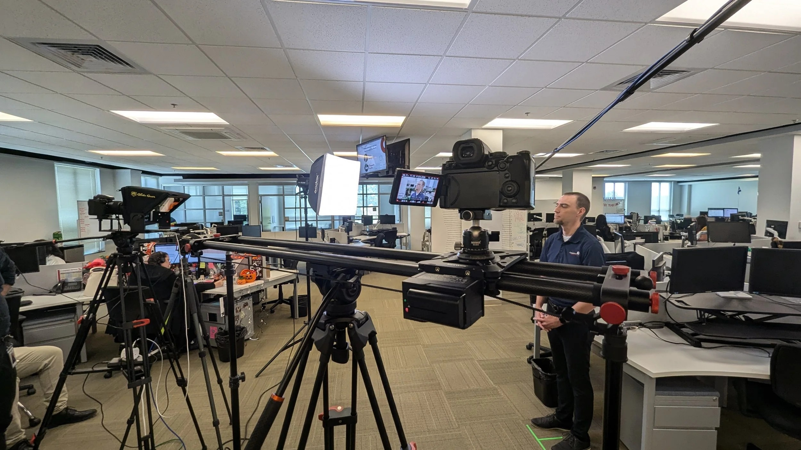
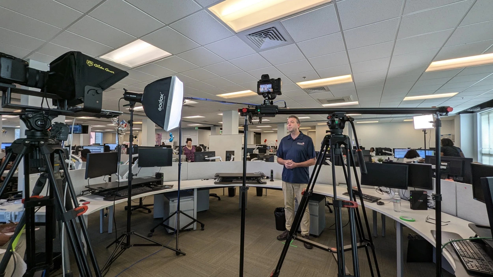
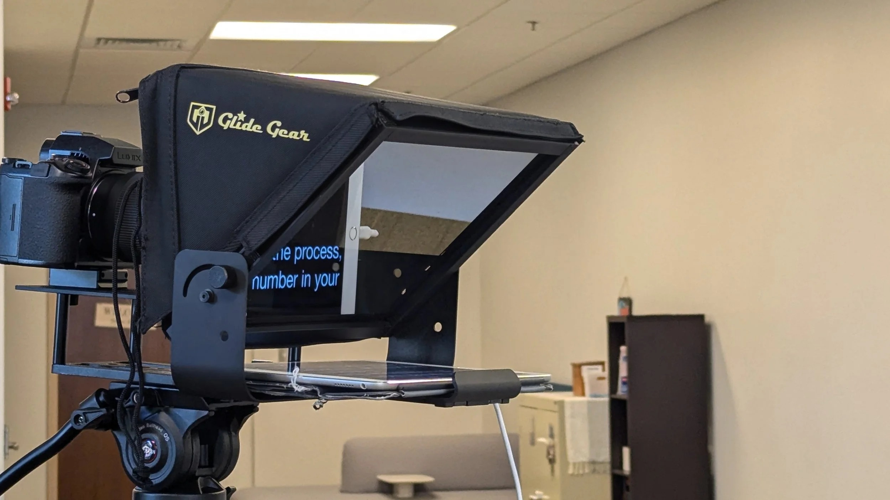

We developed a quick, easy-to-follow video for American Credit Acceptance that guides new customers through the final steps of their vehicle purchase. Our goal was to help reduce the loan funding time from 3–5 days to 2–3 days.
The Problem
After driving off the lot, customers often didn’t realize a few final steps still stood between them and a completed loan. Missing that window could mean reworking the loan from scratch — or, in the worst cases, losing the vehicle.
The Solution
We condensed the process into a quick, clear video walking customers through what came next — confirming their information, verifying employment, and completing a short interview by phone or text. Delivered as part of the dealership’s onboarding packet, it helped customers set expectations on the spot, so they’d recognize the calls and texts that followed instead of ignoring them.
Location Setup
In this wide shot, you can see our two-camera setup, one with a teleprompter and another on a slider. Our goal with the set was to maintain a professional but approachable tone for the customer, while navigating the limitations of the space and ensuring the final result was of the utmost quality.

Set Adjustments
This behind-the-scenes photo details how this was not only a multi-set production, but one that also required a multitude of actors and actresses. The lighting and camera setup had to be adjusted for each location while ensuring consistency across shots.

Color Grading
Click and drag the handle to reveal the raw footage versus the final color grade.
Teleprompter Challenges
Using the teleprompter was crucial to this project. It ensured that we didn’t have to worry about people forgetting lines and that the script was exactly what was approved by our legal team. Balancing the speed of the teleprompter with the speaker’s comfort, while ensuring the pacing matched the other actors, was a major focus.

A Bilingual Production
This project required both English and Spanish versions. We carefully scripted and shot both, adjusting the pacing and tone for each language. We worked with our bilingual associates to ensure the script was accurate to their language, and not full of Google Translate errors. Ensuring clarity in both versions was key to connecting with our diverse audiences.
More Work
More projects in Film, Motion, and Video Production.